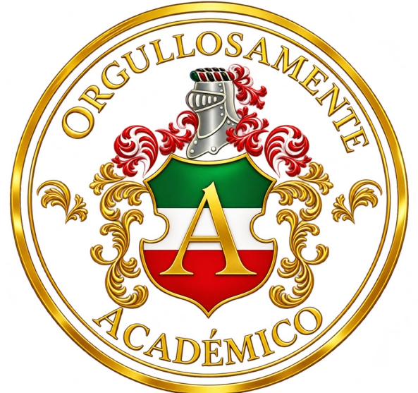
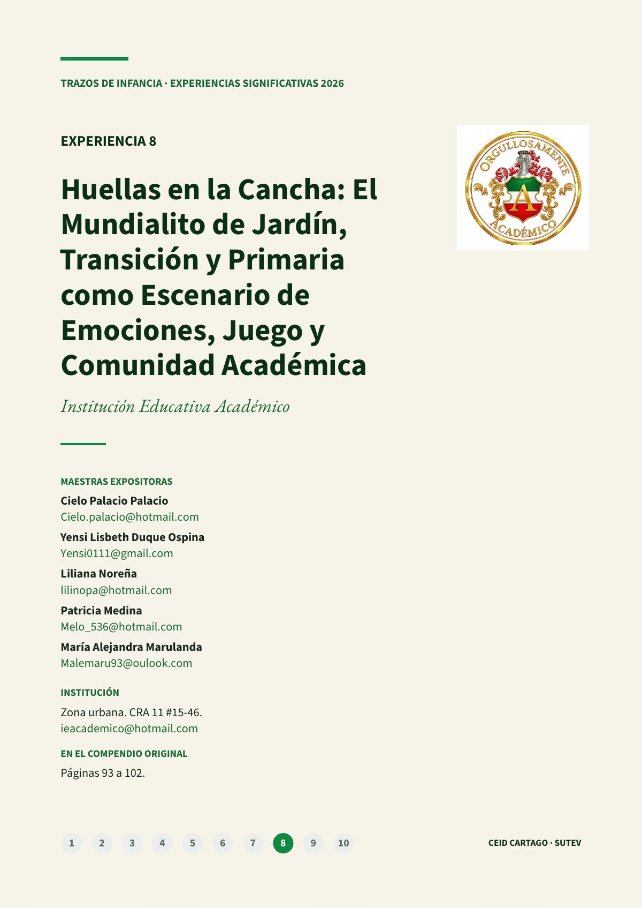
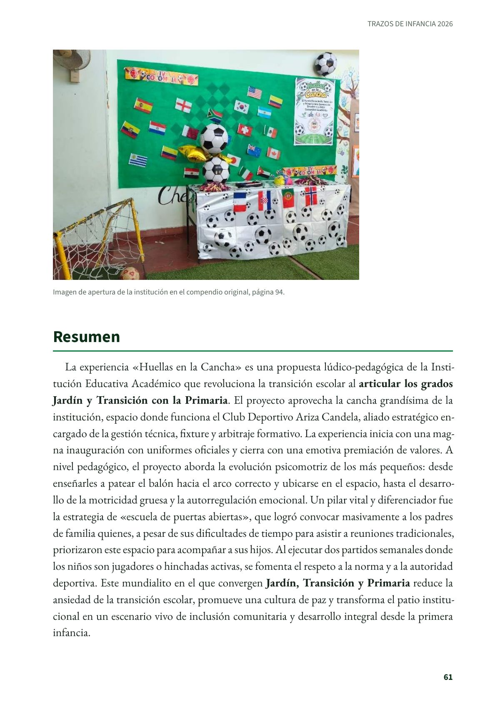
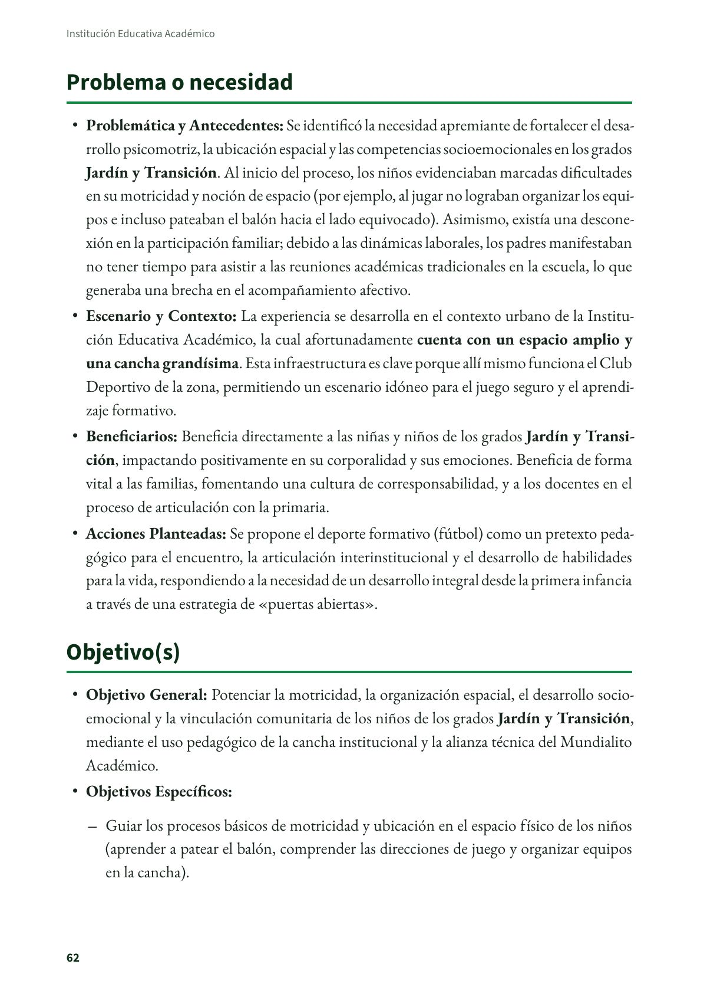
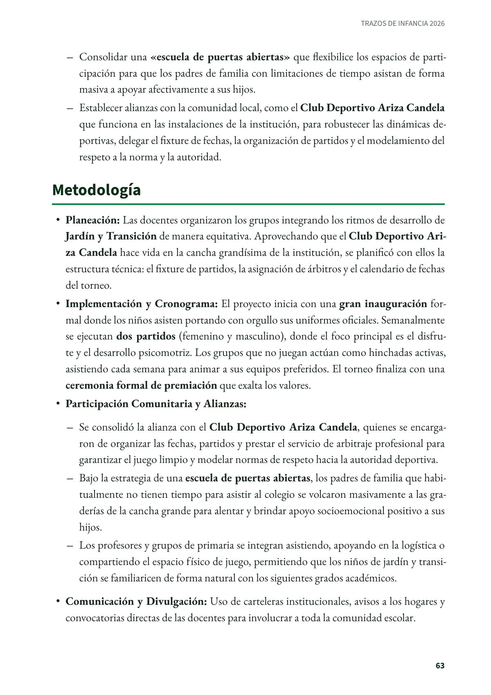
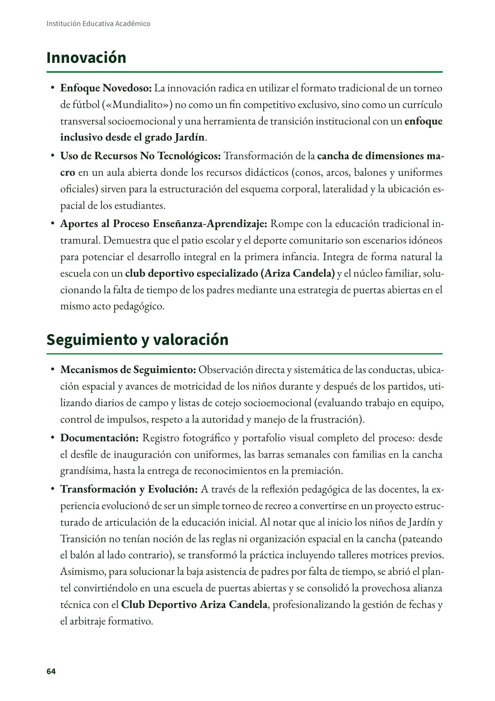
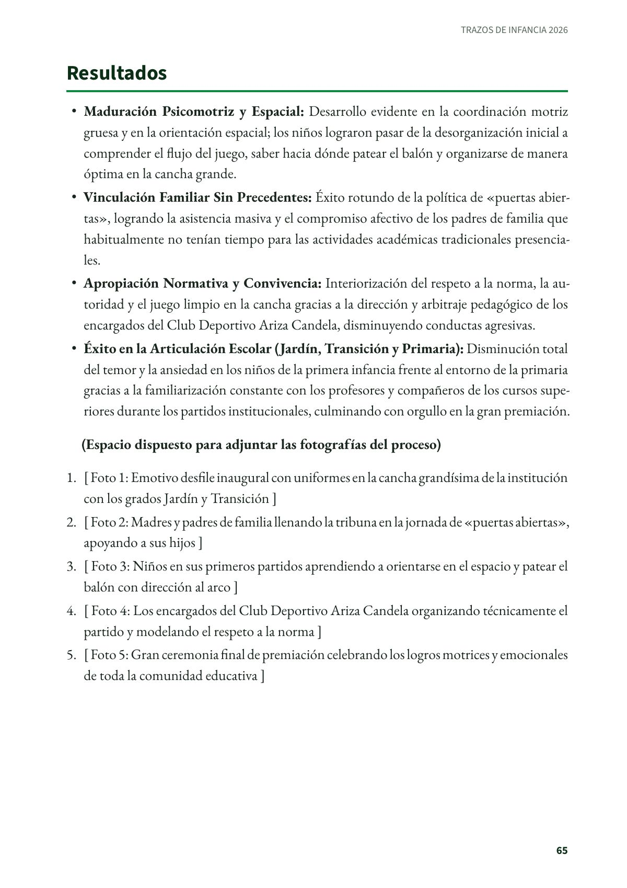
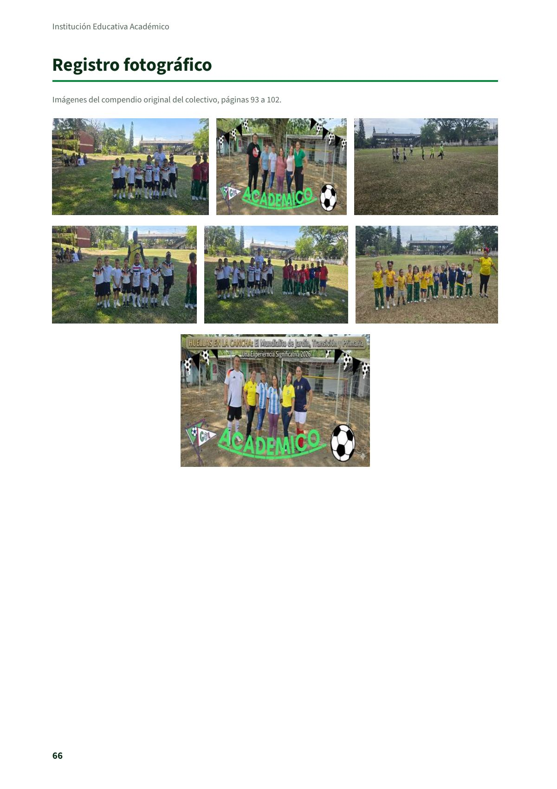

Huellas en la Cancha: El Mundialito de Jardín, Transición y Primaria como Escenario de Emociones, Juego y Comunidad Académica
Institución Educativa Académico

 Colectivo Trazos de Infancia
Colectivo Trazos de InfanciaCartago · 2026
Datos de la portada institucional
Institución Educativa Académico
Zona · Urbana
Dirección · CRA 11 #15-46
Correo institucional · ieacademico@hotmail.com
Compendio original · Páginas 93 a 102
Maestras expositoras
- Cielo Palacio Palacio
Cielo.palacio@hotmail.com - Yensi Lisbeth Duque Ospina
Yensi0111@gmail.com - Liliana Noreña
lilinopa@hotmail.com - Patricia Medina
Melo_536@hotmail.com - María Alejandra Marulanda
Malemaru93@oulook.com
Experiencia significativa en educación inicial de la Institución Educativa Académico, de Cartago, tal como la presentaron sus maestras en el compendio del colectivo Trazos de Infancia.
PDF · 7 págs. · 413 KBResumen
La experiencia «Huellas en la Cancha» es una propuesta lúdico-pedagógica de la Institución Educativa Académico que revoluciona la transición escolar al articular los grados Jardín y Transición con la Primaria. El proyecto aprovecha la cancha grandísima de la institución, espacio donde funciona el Club Deportivo Ariza Candela, aliado estratégico encargado de la gestión técnica, fixture y arbitraje formativo. La experiencia inicia con una magna inauguración con uniformes oficiales y cierra con una emotiva premiación de valores. A nivel pedagógico, el proyecto aborda la evolución psicomotriz de los más pequeños: desde enseñarles a patear el balón hacia el arco correcto y ubicarse en el espacio, hasta el desarrollo de la motricidad gruesa y la autorregulación emocional. Un pilar vital y diferenciador fue la estrategia de «escuela de puertas abiertas», que logró convocar masivamente a los padres de familia quienes, a pesar de sus dificultades de tiempo para asistir a reuniones tradicionales, priorizaron este espacio para acompañar a sus hijos. Al ejecutar dos partidos semanales donde los niños son jugadores o hinchadas activas, se fomenta el respeto a la norma y a la autoridad deportiva. Este mundialito en el que convergen Jardín, Transición y Primaria reduce la ansiedad de la transición escolar, promueve una cultura de paz y transforma el patio institucional en un escenario vivo de inclusión comunitaria y desarrollo integral desde la primera infancia.
Problema o necesidad
- Problemática y Antecedentes: Se identificó la necesidad apremiante de fortalecer el desarrollo psicomotriz, la ubicación espacial y las competencias socioemocionales en los grados Jardín y Transición. Al inicio del proceso, los niños evidenciaban marcadas dificultades en su motricidad y noción de espacio (por ejemplo, al jugar no lograban organizar los equipos e incluso pateaban el balón hacia el lado equivocado). Asimismo, existía una desconexión en la participación familiar; debido a las dinámicas laborales, los padres manifestaban no tener tiempo para asistir a las reuniones académicas tradicionales en la escuela, lo que generaba una brecha en el acompañamiento afectivo.
- Escenario y Contexto: La experiencia se desarrolla en el contexto urbano de la Institución Educativa Académico, la cual afortunadamente cuenta con un espacio amplio y una cancha grandísima. Esta infraestructura es clave porque allí mismo funciona el Club Deportivo de la zona, permitiendo un escenario idóneo para el juego seguro y el aprendizaje formativo.
- Beneficiarios: Beneficia directamente a las niñas y niños de los grados Jardín y Transición, impactando positivamente en su corporalidad y sus emociones. Beneficia de forma vital a las familias, fomentando una cultura de corresponsabilidad, y a los docentes en el proceso de articulación con la primaria.
- Acciones Planteadas: Se propone el deporte formativo (fútbol) como un pretexto pedagógico para el encuentro, la articulación interinstitucional y el desarrollo de habilidades para la vida, respondiendo a la necesidad de un desarrollo integral desde la primera infancia a través de una estrategia de «puertas abiertas».
Objetivo(s)
- Objetivo General: Potenciar la motricidad, la organización espacial, el desarrollo socioemocional y la vinculación comunitaria de los niños de los grados Jardín y Transición, mediante el uso pedagógico de la cancha institucional y la alianza técnica del Mundialito Académico.
- Objetivos Específicos:
- Guiar los procesos básicos de motricidad y ubicación en el espacio físico de los niños (aprender a patear el balón, comprender las direcciones de juego y organizar equipos en la cancha).
- Consolidar una «escuela de puertas abiertas» que flexibilice los espacios de participación para que los padres de familia con limitaciones de tiempo asistan de forma masiva a apoyar afectivamente a sus hijos.
- Establecer alianzas con la comunidad local, como el Club Deportivo Ariza Candela que funciona en las instalaciones de la institución, para robustecer las dinámicas deportivas, delegar el fixture de fechas, la organización de partidos y el modelamiento del respeto a la norma y la autoridad.
Metodología
- Planeación: Las docentes organizaron los grupos integrando los ritmos de desarrollo de Jardín y Transición de manera equitativa. Aprovechando que el Club Deportivo Ariza Candela hace vida en la cancha grandísima de la institución, se planificó con ellos la estructura técnica: el fixture de partidos, la asignación de árbitros y el calendario de fechas del torneo.
- Implementación y Cronograma: El proyecto inicia con una gran inauguración formal donde los niños asisten portando con orgullo sus uniformes oficiales. Semanalmente se ejecutan dos partidos (femenino y masculino), donde el foco principal es el disfrute y el desarrollo psicomotriz. Los grupos que no juegan actúan como hinchadas activas, asistiendo cada semana para animar a sus equipos preferidos. El torneo finaliza con una ceremonia formal de premiación que exalta los valores.
- Participación Comunitaria y Alianzas:
- Se consolidó la alianza con el Club Deportivo Ariza Candela, quienes se encargaron de organizar las fechas, partidos y prestar el servicio de arbitraje profesional para garantizar el juego limpio y modelar normas de respeto hacia la autoridad deportiva.
- Bajo la estrategia de una escuela de puertas abiertas, los padres de familia que habitualmente no tienen tiempo para asistir al colegio se volcaron masivamente a las graderías de la cancha grande para alentar y brindar apoyo socioemocional positivo a sus hijos.
- Los profesores y grupos de primaria se integran asistiendo, apoyando en la logística o compartiendo el espacio físico de juego, permitiendo que los niños de jardín y transición se familiaricen de forma natural con los siguientes grados académicos.
- Comunicación y Divulgación: Uso de carteleras institucionales, avisos a los hogares y convocatorias directas de las docentes para involucrar a toda la comunidad escolar.
Innovación
- Enfoque Novedoso: La innovación radica en utilizar el formato tradicional de un torneo de fútbol («Mundialito») no como un fin competitivo exclusivo, sino como un currículo transversal socioemocional y una herramienta de transición institucional con un enfoque inclusivo desde el grado Jardín.
- Uso de Recursos No Tecnológicos: Transformación de la cancha de dimensiones macro en un aula abierta donde los recursos didácticos (conos, arcos, balones y uniformes oficiales) sirven para la estructuración del esquema corporal, lateralidad y la ubicación espacial de los estudiantes.
- Aportes al Proceso Enseñanza-Aprendizaje: Rompe con la educación tradicional intramural. Demuestra que el patio escolar y el deporte comunitario son escenarios idóneos para potenciar el desarrollo integral en la primera infancia. Integra de forma natural la escuela con un club deportivo especializado (Ariza Candela) y el núcleo familiar, solucionando la falta de tiempo de los padres mediante una estrategia de puertas abiertas en el mismo acto pedagógico.
Seguimiento y valoración
- Mecanismos de Seguimiento: Observación directa y sistemática de las conductas, ubicación espacial y avances de motricidad de los niños durante y después de los partidos, utilizando diarios de campo y listas de cotejo socioemocional (evaluando trabajo en equipo, control de impulsos, respeto a la autoridad y manejo de la frustración).
- Documentación: Registro fotográfico y portafolio visual completo del proceso: desde el desfile de inauguración con uniformes, las barras semanales con familias en la cancha grandísima, hasta la entrega de reconocimientos en la premiación.
- Transformación y Evolución: A través de la reflexión pedagógica de las docentes, la experiencia evolucionó de ser un simple torneo de recreo a convertirse en un proyecto estructurado de articulación de la educación inicial. Al notar que al inicio los niños de Jardín y Transición no tenían noción de las reglas ni organización espacial en la cancha (pateando el balón al lado contrario), se transformó la práctica incluyendo talleres motrices previos. Asimismo, para solucionar la baja asistencia de padres por falta de tiempo, se abrió el plantel convirtiéndolo en una escuela de puertas abiertas y se consolidó la provechosa alianza técnica con el Club Deportivo Ariza Candela, profesionalizando la gestión de fechas y el arbitraje formativo.
Resultados
- Maduración Psicomotriz y Espacial: Desarrollo evidente en la coordinación motriz gruesa y en la orientación espacial; los niños lograron pasar de la desorganización inicial a comprender el flujo del juego, saber hacia dónde patear el balón y organizarse de manera óptima en la cancha grande.
- Vinculación Familiar Sin Precedentes: Éxito rotundo de la política de «puertas abiertas», logrando la asistencia masiva y el compromiso afectivo de los padres de familia que habitualmente no tenían tiempo para las actividades académicas tradicionales presenciales.
- Apropiación Normativa y Convivencia: Interiorización del respeto a la norma, la autoridad y el juego limpio en la cancha gracias a la dirección y arbitraje pedagógico de los encargados del Club Deportivo Ariza Candela, disminuyendo conductas agresivas.
- Éxito en la Articulación Escolar (Jardín, Transición y Primaria): Disminución total del temor y la ansiedad en los niños de la primera infancia frente al entorno de la primaria gracias a la familiarización constante con los profesores y compañeros de los cursos superiores durante los partidos institucionales, culminando con orgullo en la gran premiación.
(Espacio dispuesto para adjuntar las fotografías del proceso)
- [ Foto 1: Emotivo desfile inaugural con uniformes en la cancha grandísima de la institución con los grados Jardín y Transición ]
- [ Foto 2: Madres y padres de familia llenando la tribuna en la jornada de «puertas abiertas», apoyando a sus hijos ]
- [ Foto 3: Niños en sus primeros partidos aprendiendo a orientarse en el espacio y patear el balón con dirección al arco ]
- [ Foto 4: Los encargados del Club Deportivo Ariza Candela organizando técnicamente el partido y modelando el respeto a la norma ]
- [ Foto 5: Gran ceremonia final de premiación celebrando los logros motrices y emocionales de toda la comunidad educativa ]
Maestras e institución
- Cielo Palacio Palacio: Cielo.palacio@hotmail.com
- Yensi Lisbeth Duque Ospina: Yensi0111@gmail.com
- Liliana Noreña: lilinopa@hotmail.com
- Patricia Medina: Melo_536@hotmail.com
- María Alejandra Marulanda: Malemaru93@oulook.com
- Institución: Institución Educativa Académico, zona urbana, CRA 11 #15-46. ieacademico@hotmail.com
Así se ve en el libro
7 páginas





